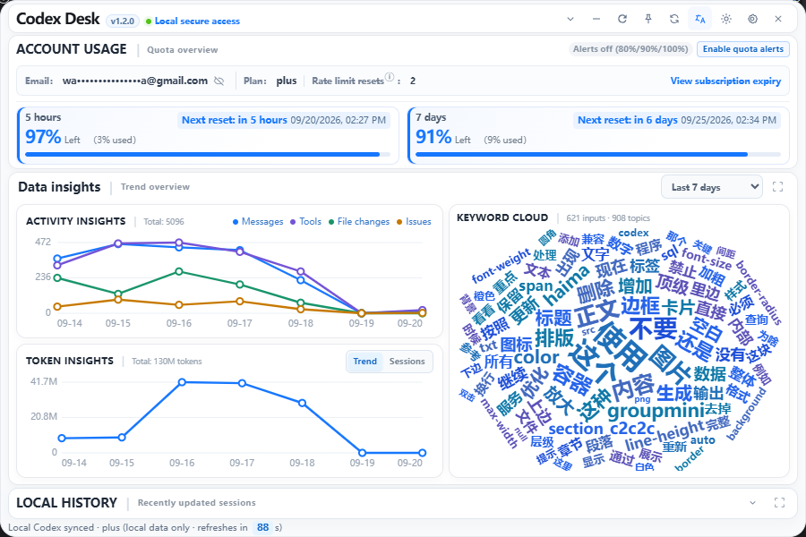
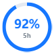
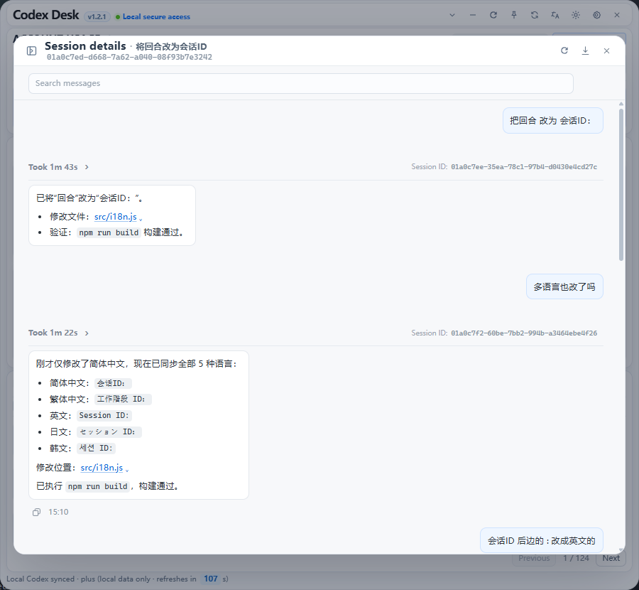

Codex CLI 桌面助手YOUR CODEX CLI COMPANION
Codex Desk.
额度、用量、会话，一处掌握。Your quota. Your sessions. One place.
在桌面查看剩余额度，了解 Token 用量，找回并接续本地会话。Keep an eye on your quota, understand token usage, and pick up your local conversations.
Windows · macOS · Linux

开源项目Open source本地处理Local processing支持三大桌面平台Built for your desktop
额度与用量QUOTA & USAGE
额度，心中有数Know your quota
悬浮球留在桌面，额度状态随时可见。需要更多信息时，再展开控制台。Keep the floating indicator on your desktop. Open the dashboard when you need the details.
- 查看额度See your limits查看额度窗口、使用比例和重置时间。Check quota windows, usage percentages, and reset times.
- 接收提醒Get a heads-up启用通知后，在用量达到阈值时收到提醒。Enable notifications for alerts at usage thresholds.
- 了解用量Understand usage按天查看 Token 消耗与活动趋势。Explore daily token usage and activity trends.

悬浮显示Floating indicator阈值提醒Usage alerts
本地会话LOCAL SESSIONS
接着上次的思路Pick up the thread
找回之前的讨论，看清修改过程，再回到终端继续工作。Find a previous conversation, review what changed, and carry on in your terminal.
- 查找历史Find a conversation搜索本地会话，查看对话内容和用量概览。Search local sessions and review messages and usage.
- 查看变更Review changes回看会话记录中的文件修改和差异。Inspect recorded file changes and diffs.
- 恢复工作Resume your work复制恢复命令，在终端接续会话。Copy the resume command to continue in your terminal.

即刻开始GET STARTED
给 Codex 一个桌面Bring Codex to your desk
先安装并登录 Codex CLI，再打开 Codex Desk。Install and sign in to Codex CLI, then open Codex Desk.
安装说明与常见问题Installation guide & troubleshooting ↗下载 Codex DeskDownload Codex Desk
Windows · macOS · Linux